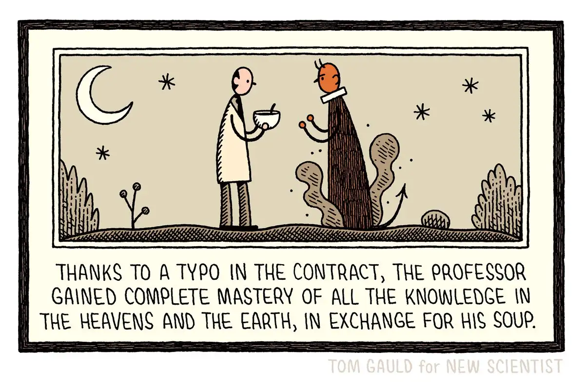

Happy Wednesday! Thank you for supporting the Daily Bulletin project.
- Suggest improvements to the Daily Bulletin project.
- Unsubscribe if you no longer wish to receive emails from the Daily Bulletin project.
Wellbeing Inspirations
Want to contribute to a future Daily Bulletin? Share your inspirations to give everyone some morning wellbeing energy!
Cartoon of the Day

Created by Tom Gauld.
Delicious Dinings
| Day | Meal | Options |
|---|---|---|
| Wed | Breakfast | Hot Breakfast |
| Lunch | Turkey Mince Pie | |
| Sweet Potato Falafel 🌱 | ||
| Dinner | Buffalo Roast Vegetable Pasta Bake 🌱 | |
| Creamy Pearl Barley 🌱 | ||
| Thu | Breakfast | Continental Counter |
| Lunch | Chilli non Carne 🌱 | |
| Dinner | Katsu Chicken | |
| Katsu Tofu 🌱 |
The catering team would like to remind everyone to wash their hands before coming to the dining hall, and to refrain from eating in the servery area. Thank you!
Retrieved from Shared Weekly Menu. For reference only; accuracy not guaranteed.
Important Events
| Day | Time | Event | Location |
|---|---|---|---|
| Wed | 17:00–19:00 | Wellbeing Drop-in | Health Centre |
| 19:30–20:30 | P6 | Great Hall | |
| Thu | 19:30–20:30 | PeaCo | Great Hall |
Retrieved from What's On This Week.
Today in History
- 1725 – Johann Sebastian Bach first performed the church cantata Sie werden euch in den Bann tun, BWV 183 in Leipzig, Germany.
- 1958 – The Australian adventurer Ben Carlin became the only person to circumnavigate the world in an amphibious vehicle, having travelled over 80,000 kilometres (50,000 miles) by land and sea.
Retrieved from Wikipedia.
Today in News
- Jackson receives honorary Palme D’Or as Cannes flaunts star power despite Hollywood’s retreat
- Amazon looks to redefine a need for speed with 30-minute deliveries
- Trump downplays differences with China’s Xi over Iran as he heads to Beijing for high-stakes summit
Retrieved from the Associated Press.